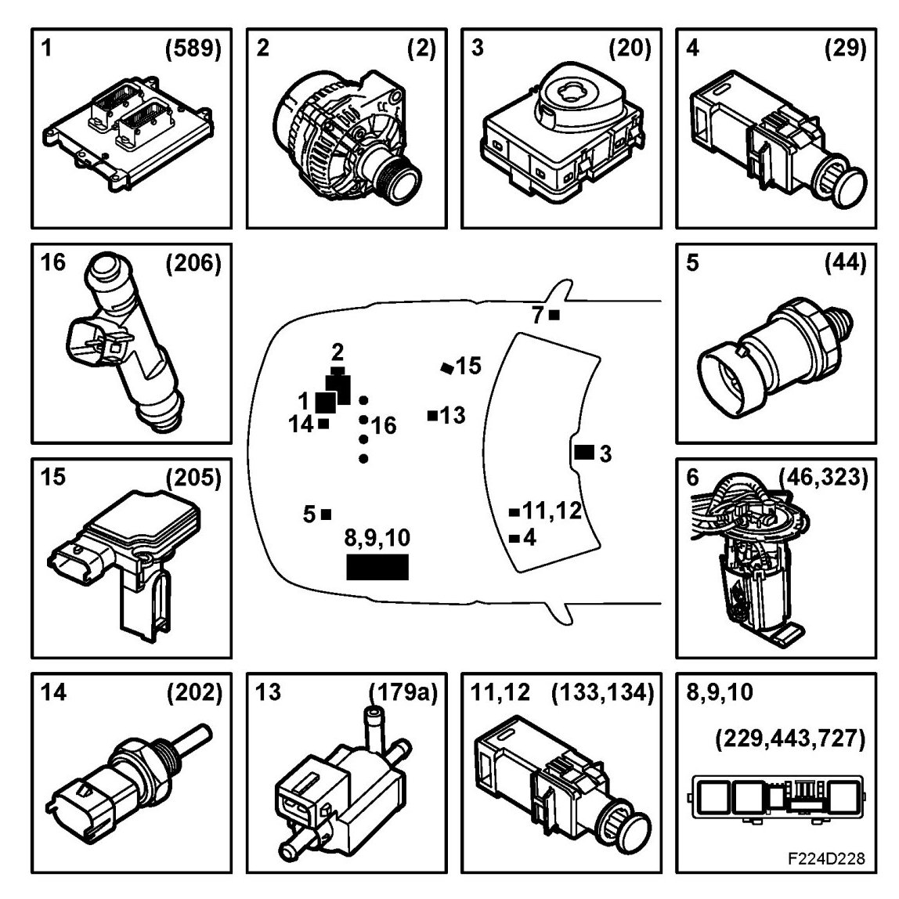
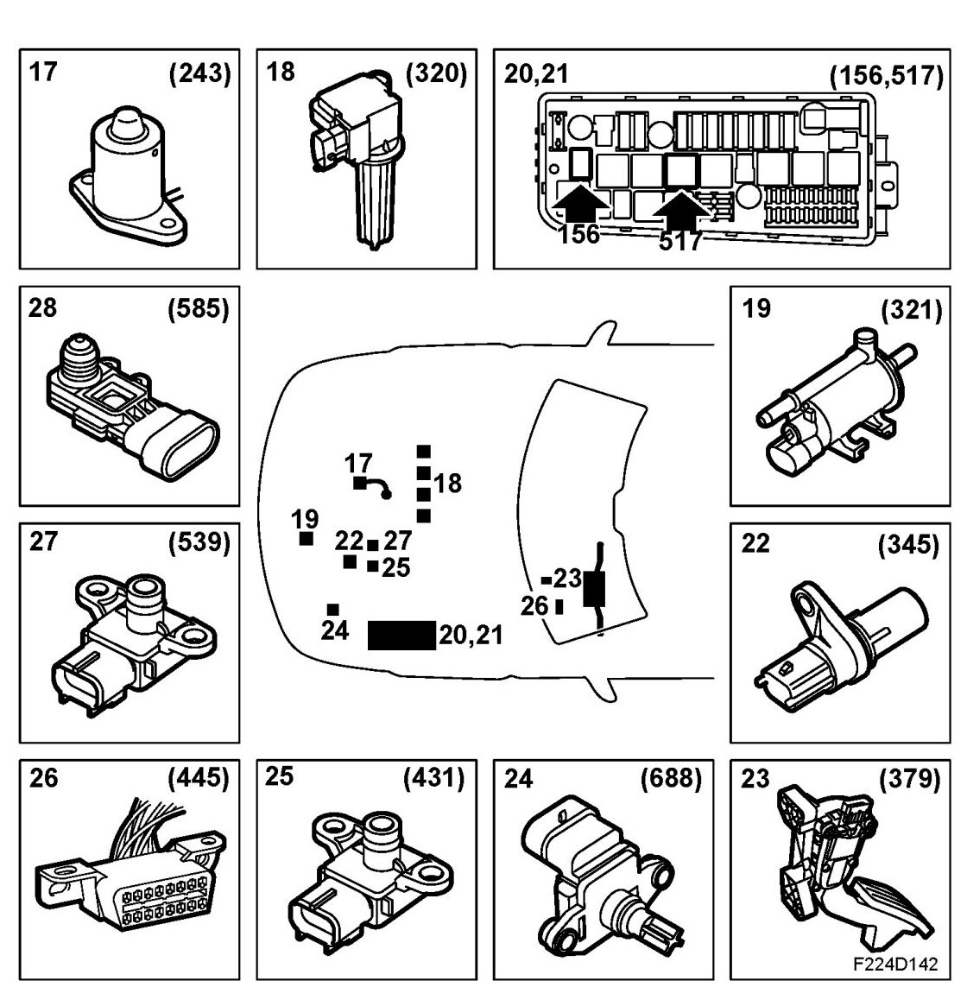
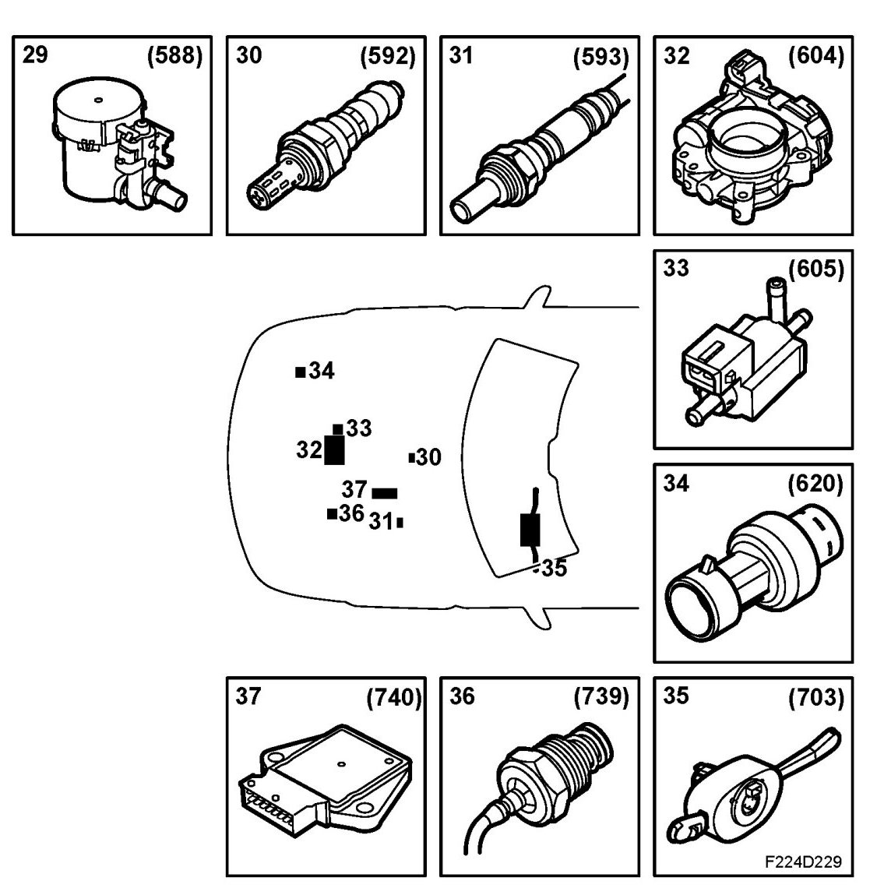

Main Components
Main Components
1. Control module, Trionic T8 (589)

2. Generator (2)
3. Ignition lock (20)
4. Contact, brake light (29)
5. Engine oil pressure sensor (44)
6. Fuel level sensor (46)
Engine, fuel pump (323)
7. Relay, fuel pump (102)
8. Main relay, engine control system (229)
9. Relay, oxygen sensor preheating (443)
10. Electrical unit, petrol engine (727)
11. Contact, clutch, cruise control (133)
12. Contact, brake, cruise control (134)
13. Boost pressure control valve (179a)
14. Coolant temperature sensor (202)
15. Mass air flow sensor (205)
16. Injectors cyl. 1-4 (206a-d)
17. Engine oil level sensor (243)

18. Ignition coil with integral power stage, cyl. 1-4 (320a-d)
19. Evap canister purge valve (321)
20. Relay, A/C compressor (156)
21. Relay, starting relay (517)
22. Crankshaft position sensor (345)
23. Accelerator pedal position sensor (379)
24. Intake manifold sensor (688)
25. Manifold absolute pressure sensor (431)
26. Diagnostic socket, 16-pin, CARB (445)
27. Atmospheric pressure sensor (539)
28. Pressure sensor, EVAP (585)

29. Solenoid valve, shut-off EVAP (588)
30. Preheated oxygen sensor, front (592)
31. Preheated oxygen sensor, rear (593)
32. Throttle body actuator unit (604)
33. Solenoid valve, turbo by-pass (605)
34. Pressure sensor, A/C (620)
35. CIM (703)
36. Pressure sensor, power steering fluid (739)
37. CDM (740)